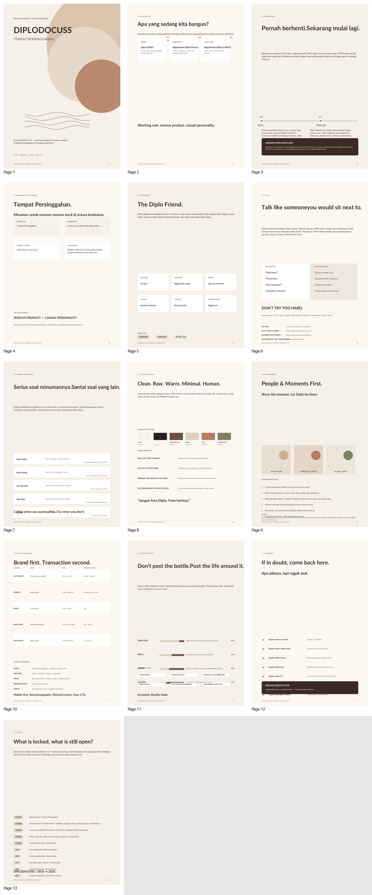
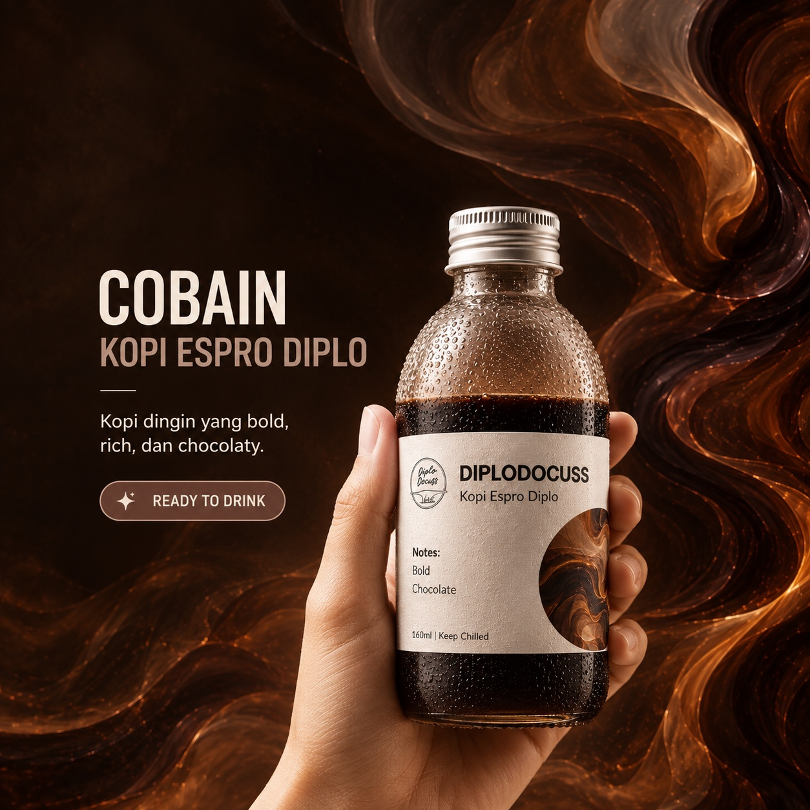
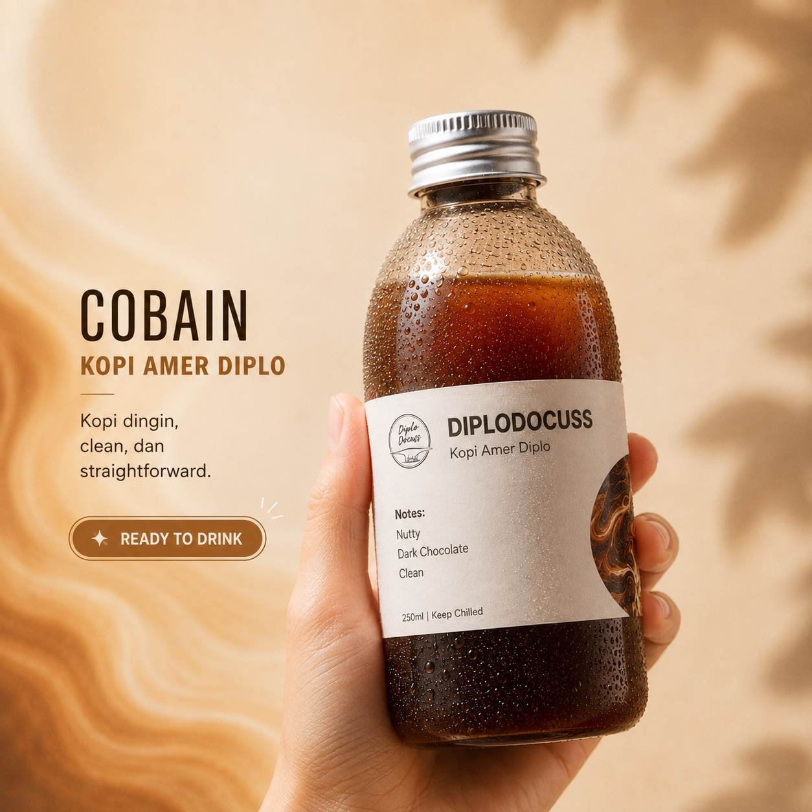

Di mana kamu lagi?
Mungkin kami bisa ikut mampir.
Minum dulu. Habis itu lanjut lagi.
Pesan di Grab →Di kos. Di rumah. Di kantor. Di perjalanan. Bareng teman. Atau sendirian.




Hari sudah sore. Laptop belum ditutup. Yaudah, satu dulu. Biar malamnya masih bisa lanjut.
Nggak perlu banyak persiapan. Buka botol. Tuang. Duduk. Sisanya biar obrolannya yang jalan.
Kadang memang cuma ingin duduk sendiri. Kopi tetap bisa nemenin.
Ambil satu. Bawa jalan. Selesai.
Kalau diajak pergi jauh, biasanya yang dibawa lebih banyak daripada yang dibutuhkan.